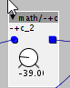
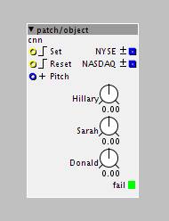

@johannes I would like 16 entries also  , did mention this previously
, did mention this previously
Improvements/Wishes for the patcher
johannes
#103
ok for next release:
My current efforts are focused on:
- improving the object editor
- embedding custom objects in a patch with a "patch/object" object, similar like a "patch/patcher" object embeds a subpatch
- patch banks: making it easier to deal with writing and switching between multiple patches on sdcard
- auto-uploading files to sdcard that a patch depends on, so starting a patch that relies for example on samples will also copy the samples to sdcard if needed.

johannes
#106
Certainly on my wishlist too - and rather multi-level undo, but will be after the 1.0.7 release.
toneburst
#108
As a new Axoloti user, it's good to see the software is still very much in active development.
Is there a list anywhere of new modules that are likely to be developed in the relatively near future?
a|x
philoop
#109
..I hope that can wait very very long
I want this object -+c..axo (1.4 KB) 2 b in -c..axo (1.4 KB)
(its name.axo is wrong)
to be part of the objects
Also i am really fond of jaffasplaffas sel objects with display ...will they be integrated one day ?
johannes
#110
In some cases different "tapers" of parameters are useful. With "taper", I mean the relation between knob position and numerical value : only positive range, bipolar, semi-exponential.
Currently an object selects the taper used on a parameter, and the user can't change it without modifying the object.
A separate object for every combination of object+taper(s) explodes the object library, perhaps a user-selectable taper (when this is allowed by the object) is a better option, keeping the object library more tidy.
There is also demand for "subranged" parameters - where tweaking is reduced to only a part of the parameter range. If that is implemented, the "math/+c" could be thought of as just a subranged "math/-+c".
Exploding the number of objects : easy. Cleaning it up while maintaining forward compatibility is harder.
But let me first get the next release out, that will make developing and sharing custom objects a lot easier:


W_T
#112
A zoom function for the patcher would be nice and handy, but no deal breaker if not implemented.
thetechnobear
#113
gentle reminder - this thread is for patcher changes
there is a separate thread for new objects
keyman
#114
keyboard shortcut for File menu - Open in URL ? cmd+U??
Me and keyboard shortcuts !?! does it make sense...
toneburst
#115
I made a new thread with a link to this a few days ago, but realised I should have posted it here.
Pinterest board showing different approaches to node-based UIs:
It turns out this kind of editing environment is quite common, particularly in the high-end video compositing and 3D worlds.
a|x
toneburst
#116
+1 for assignable colours for objects
+1 for zooming, too (though it looks like you're on this one). Cmd-'+' and cmd-'-' keyboard shortcuts could be used to zoom in/out.
Bidule has a mechanism for showing zoom-level and also allowing panning around the workspace. You can see it at bottom-right of this screenshot:
{kind=link}
How about a key to hold down to allow dragging the workspace around? This is commonly the spacebar (i.e. in Adobe applications), but that's already used in the Axoloti Patcher to bring up the object browser.
a|x
toneburst
#117
How about thicker cables? I think they would look nicer. The yellow cables, particularly look 'jaggy' when they're so thin. This would probably need to be combined with a method (keyboard shortcut) to temporarily hide or make them semi-transparent.
a|x
toneburst
#118
Couple of OS X (El Capitan) Bugs:
- Recent items don't appear in the File > Open Recent sub-menu (though the menu item itself does appear).
- When dragging a selection rectangle around multiple objects to select them, the workspace window doesn't scroll when dragging past the bottom of the window.
a|x
toneburst
#120
Re. Issue #14 ("GUI: new object dialog, resizeable/draggable")
I think the option to have the object browser be persistent (i.e. doesn't go away when you add an object to the workspace) and draggable would be useful.
Quartz Composer, which I used to use a lot, and which has been mentioned several times in this forum does it like this:
{kind=link}
The two smaller floating windows are the library (right) and inspector, where properties of the selected object can be set.
The Inspector is also useful in the sense that it allows for setting additional object properties that aren't exposed as inlet ports (I'm using Axoloti terminology here- names are different in QC).
Both Library and Properties windows can be closed and invoked again with keyboard shortcuts.
I'll shut up for a while, now ...
a|x
kausto
#121
Yeah, i like vvvv's herr inspektor a lot
https://vvvv.org/documentation/the-gui
And yes, inspectors are really useful in some cases.